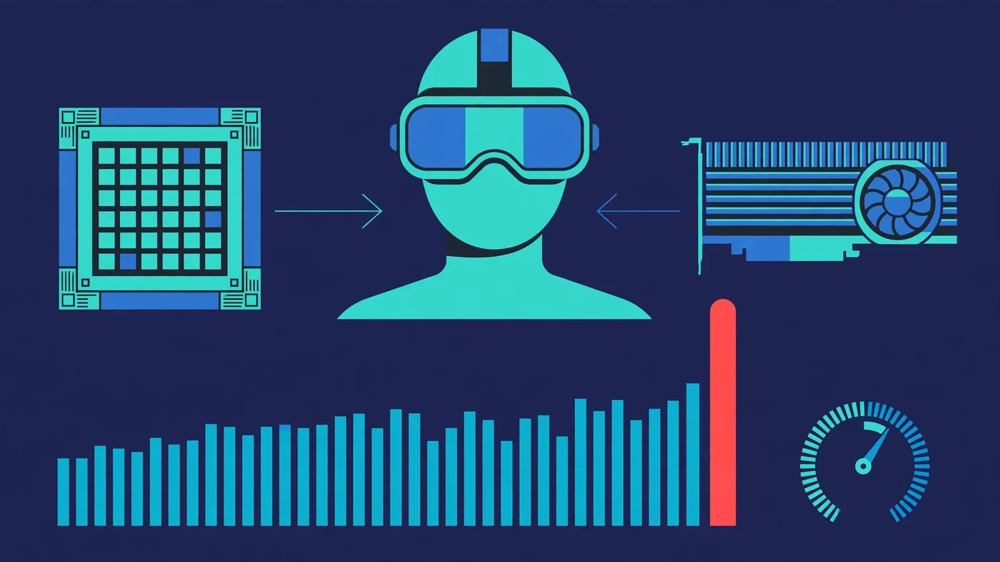

VR Gaming Bottleneck: CPU, GPU or Headset Limiting Frames?
A VR gaming bottleneck is usually the CPU or the GPU failing to meet a hard deadline — and finding out which one matters more in VR than anywhere else, because a missed frame does not just lower your FPS, it can make you feel sick. Your PC can run flat games beautifully and still stutter in a headset: VR renders two high-resolution views per frame, tracks your head and hands hundreds of times a second, and has to deliver every frame on time or your brain notices the disconnect. This guide explains why VR punishes bottlenecks harder than flat gaming, how to tell whether your CPU, GPU or headset is the limit, and which fixes actually work.

VR Gaming Bottleneck: The Short Answer
A VR gaming bottleneck happens when your CPU, GPU or headset connection cannot deliver every frame inside the headset's refresh window. At 90 Hz that window is 11.1 milliseconds per frame — not on average, but every single frame. Miss it, and the headset either shows you a frozen or reprojected image while your head keeps moving, which is what causes judder and motion sickness. The short answer to "which part is the bottleneck" is: check the frame timing graph before you buy anything, because the fix for a CPU limit and the fix for a GPU limit are completely different, and guessing wrong wastes money.
In most VR setups the two usual suspects are the processor and the graphics card, and the processor surprises people. Everyone expects the GPU to be the limit — two high-resolution displays, complex scenes — but VR also doubles the CPU's per-frame work: every draw call, physics step and scene update happens twice, once per eye, and on top of that the CPU handles tracking calculations and the VR runtime's own compositor work. A processor that feels fine on a flat monitor can fall apart in a headset. Our CPU vs GPU bottleneck guide covers the general pattern, and this guide applies it to VR specifically.
Why VR Has a Hard Frame Deadline
On a flat monitor, a late frame is an annoyance. The monitor shows whatever is ready, the FPS number dips for a moment, and you move on. A VR headset works differently: it runs on a fixed refresh schedule, and each frame has a hard deadline. At 90 Hz the whole frame — CPU work plus GPU work plus the runtime's distortion and reprojection overhead — must finish in 11.1 milliseconds. At 120 Hz the budget shrinks to 8.3 milliseconds, and at 72 Hz it relaxes to 13.9 milliseconds. Meta's own performance guidelines for developers state the same rule: applications should hit frame rate consistently, and VR performance problems are generally CPU or GPU problems that show up as missed deadlines.
The deadline is strict because your head never stops moving. On a monitor, your eyes are still; in VR, every small head movement changes what the headset must show, and the image has to match your head's position within milliseconds or your brain registers the mismatch. That is why VR cares about frame-time consistency far more than average FPS: a system that averages 90 FPS but drops to 45 for a few frames during a physics interaction will feel terrible, while a steady 90 FPS with no spikes feels smooth. If you have never looked at frame times before, our frame time guide explains why the average lies and what the graph actually tells you.
The other thing that makes VR different is reprojection. When a frame misses its deadline, the runtime does not just show the old frame — it synthesizes an intermediate one by warping the previous frame to match your latest head position. SteamVR calls this Motion Smoothing; Meta calls it Asynchronous SpaceWarp. It keeps the world from freezing, but reprojected frames add latency and smear during fast head movements, and at half rate — 45 FPS reprojected to 90 — the artifacts are obvious. Reprojection is a safety net, not a fix: the goal is always native frame rate, not reprojected frame rate.
CPU Bottleneck in VR: The Signs
A CPU bottleneck in VR shows up in specific ways. The most telling sign is stuttering when you turn your head quickly or when physics happens — picking up objects, explosions, crowded scenes — while the GPU sits well below full load. If your graphics card is at 60 or 70 percent usage and the game still hitches, the CPU is not feeding it fast enough. Another sign is the SteamVR frame timing graph: if the CPU line spikes above the 11.1 millisecond budget while the GPU line stays comfortably below it, the processor is the limit.
Single-thread speed matters more than core count here. The tracking and compositor code, and much of a game's simulation logic, cannot be fully spread across cores — so a chip with many slower cores can still stutter where a faster six-core stays smooth. Background software makes it worse: Discord, a browser, Windows updates and recording tools all compete for the same cores the game and the VR runtime need, and a background task that is invisible in flat gaming can become a frame-time spike in VR. The fix list for CPU limits is in its own section below, but the diagnosis comes first — never upgrade on a hunch.
GPU Bottleneck in VR: The Signs
A GPU bottleneck in VR looks different. The graphics card sits at 95 percent usage or higher, the frame timing graph shows the GPU line pressed against or over the budget, and the stutter gets worse when you raise the render resolution or turn up shadows, reflections and anti-aliasing — and gets better when you lower them. That last test is the giveaway: if dropping the resolution fixes the stutter, the GPU was the limit, because the CPU's workload barely changes with resolution.
VRAM can be the hidden part of a GPU bottleneck. VR renders at high resolutions — the headset's panels, plus supersampling on top — so texture-heavy games can push an 8GB card to its limit even when the GPU chip itself has headroom. When VRAM fills up, textures stream in late and you get hitches on scene changes. Our VRAM guide explains how much memory each resolution actually needs, and the same logic applies twice over in VR, where every texture is effectively drawn for two eyes.
When the Headset Itself Is the Limit
Sometimes neither the CPU nor the GPU is the problem — the headset or the connection is. A standalone headset running PC VR over wireless streaming adds encoding, network and decoding to every frame, and a weak link there shows up as stutter that no settings change in the game will fix. With Meta's Air Link, the headset should be on a 5 GHz Wi-Fi network with the PC wired to the router by Ethernet; a PC on Wi-Fi, a crowded 2.4 GHz band, or a router in another room all add latency spikes. Meta's own setup guidance asks for a USB-C 3.2 cable rated at 5 Gbps or faster for wired Link, and a 5 GHz network for Air Link — those are minimums, not suggestions.
The headset's own refresh rate and resolution are also part of the equation. A headset running at 120 Hz gives the PC 8.3 milliseconds per frame, which is a much harder target than 90 Hz — and a headset rendering at a higher resolution per eye needs proportionally more GPU power. If your PC holds 90 Hz cleanly but falls apart at 120 Hz, the headset setting is the limit, not the hardware. The same logic applies to the display itself: just as a monitor can cap what you see, the headset's panels and lenses cap the experience. Our monitor bottleneck guide makes the same point for flat screens.
Tracking faults are the other headset-side problem, and they look different from a bottleneck: the world drifts, controllers float away, or the display greys out. Those are tracking and sensor issues, not performance limits, and they call for room setup and lighting fixes rather than hardware upgrades. Do not confuse the two — a frame-time graph shows a performance problem, while drifting controllers point at the room, not the PC.
How to Diagnose a VR Gaming Bottleneck in 10 Minutes
Diagnosis in VR is easier than in flat gaming, because the runtimes give you the graph directly. Follow these steps in order, and change nothing until the graph tells you what to change.
- Open the frame timing graph. In SteamVR, go to Settings, then Performance, and turn on Display Frame Timing. For a Meta headset on the native runtime, open the Oculus Debug Tool and turn on the Performance HUD, which shows app CPU time, app GPU time, compositor time and dropped frames separately.
- Play a demanding scene for ten minutes. Use a repeatable workload — a busy area, a combat sequence, a physics-heavy moment — not a menu. Watch the graph while the stutter happens, not when the game is running smoothly.
- Read the two lines. If the CPU line spikes above the frame budget while the GPU line stays low, the CPU is the limit. If the GPU line rides the budget while the CPU stays low, the GPU is the limit. If both stay low but frames still drop, look at the compositor line and the connection — the runtime, the cable or the Wi-Fi is eating the time.
- Confirm with one controlled change. Lower the render resolution by one step and play the same scene again. If the stutter clears, the GPU was the limit. If nothing changes, the CPU or the connection was the limit — the GPU was never the problem.
- Check the supporting numbers. Open a monitoring overlay and look at per-core CPU usage, GPU usage, temperatures and RAM. Individual cores pegged at 100 percent while overall CPU usage looks modest means a single-thread bottleneck, the most common kind in VR. High temperatures mean thermal throttling, not a weak part — our thermal throttling guide explains how to tell the two apart.
Write down what the graph showed before you change anything. Tuning blind — changing five settings at once and hoping — is how people buy a new graphics card to fix a CPU problem. If you want the general version of this process, our how to check a PC bottleneck guide walks through the same tests for flat games.
VR Gaming Bottleneck Fixes for the CPU
If the diagnosis points at the processor, start with the free fixes. Close background software before you play — browsers, Discord overlays, recording tools and anything syncing in the background all steal the cores VR needs. Lower the settings that cost CPU time rather than GPU time: physics detail, crowd density, draw distance and shadow quality on the CPU side, and any setting labelled simulation, AI or population. Dropping the render resolution will not help a CPU limit, so do not sacrifice image quality for a problem it cannot fix.
Next, check the cheap hardware factors. Make sure the RAM is running at its rated speed — enable the XMP or EXPO profile in the BIOS, or the memory runs slower than you paid for — and confirm two sticks are installed in the correct slots for dual-channel mode, because a single stick costs real performance. Our XMP/EXPO guide and single vs dual channel guide cover both checks. If temperatures are high, clean the cooler and check the fan curves: a processor that throttles under sustained load looks exactly like a slow processor on the frame-time graph.
When a real upgrade is needed, the target is strong single-thread speed, not more cores. A modern six-core processor with fast cores is the realistic floor for smooth PC VR — the same class of chip our pairing guides recommend, such as the Ryzen 5 7600 or the Core i5-12400F. Our best CPU for RTX 4060 guide shows what that tier looks like in practice. A flagship sixteen-core chip will not help if its single-thread speed is not faster, so buy clock speed and cache, not core count.
VR Gaming Bottleneck Fixes for the GPU
If the diagnosis points at the graphics card, the fixes are mostly settings. Lower the SteamVR render resolution first — it is the single biggest lever on GPU load in VR, because every pixel is drawn twice. Then cut the settings that cost the most per-pixel work: shadows, reflections, transparency, anti-aliasing and volumetric effects. Keep the headset refresh rate where the GPU can hold it: a stable 90 Hz always beats a 120 Hz setting that misses frames, because every missed frame at 120 Hz is a visible judder.
Reprojection settings are worth understanding, not just toggling. SteamVR Motion Smoothing and Meta's Asynchronous SpaceWarp synthesize frames when the GPU falls short, and they can make a borderline system feel playable — but they add latency and smear on fast head movements, so they are a cushion, not a cure. If you are running at half rate — 45 FPS reprojected to 90 — the GPU is genuinely too slow for the settings, and the honest fix is lower resolution or a faster card. Our low GPU usage guide covers the cases where the card is not being used properly, which is a different problem from the card simply being too slow.
For an upgrade, match the card to the headset's resolution, not to a brand. Higher-resolution headsets and higher render scales need proportionally more GPU power and more VRAM, and a card that was comfortable at a lower resolution can become the limit overnight when the headset changes. Check the pairing on the PC Bottleneck Calculator before you buy, and read its methodology page so you know what the estimate means.
Headset and Connection Fixes That Actually Help
When the connection is the limit, the fixes are unglamorous and effective. For wireless PC VR, wire the PC to the router with Ethernet, keep the headset on a clean 5 GHz channel, and keep the router in the same room — a mesh node, a powerline adapter or a PC on Wi-Fi all add latency spikes that show up as stutter the frame-time graph cannot explain. If the wireless link keeps dropping frames, switch to a wired Link cable rated USB-C 3.2 at 5 Gbps or faster; the cable removes the network from the equation entirely.
Use the native runtime when you can. Running a game through SteamVR on top of the Meta runtime adds a second layer of software between the game and the headset, and that layer costs frame time. For games available on both stores, the native Meta runtime is usually the smoother path; SteamVR is still the right choice for games that only exist on Steam. Also check the basics: update the GPU drivers and the headset firmware, and close Windows settings that interfere — our Windows settings guide lists the ones that help and the popular tweaks you can skip.
Finally, lower the headset's demands before you blame the PC. Dropping from 120 Hz to 90 Hz gives every frame 11.1 milliseconds instead of 8.3, and that alone can turn a stuttering session smooth when the GPU is borderline. Lowering the render resolution per eye has the same effect. These are not defeats — a stable 90 Hz with clean frame times feels far better than a 120 Hz setting that misses every third frame.
The Right VR Upgrade Order
Upgrades should follow the diagnosis, not the catalogue. The order that fixes the most VR problems for the least money is:
- Fix the free things first. Close background apps, enable XMP/EXPO, confirm dual-channel RAM, update drivers and firmware, and set the refresh rate and render resolution the PC can actually hold.
- Fix the connection. If the stutter is wireless, wire the PC to the router or switch to a proper Link cable before you buy any hardware.
- Upgrade the part the graph blamed. CPU spikes mean a faster processor with strong single-thread speed; GPU spikes mean a faster card with enough VRAM for the headset's resolution. Upgrading the other part wastes the money.
- Upgrade the headset last. A higher-resolution or higher-refresh headset raises the demands on everything else, so it only makes sense once the PC already holds its current headset's targets with headroom.
One warning: do not upgrade the headset and the PC at the same time. If the experience improves, you will not know which change fixed it — and if it does not, you will not know which part to return. Change one thing, re-run the same scene, and read the graph again.
Free PC Bottleneck Calculator — Estimate CPU and GPU balance for your resolution and workload: check whether your CPU, GPU or VRAM is the slow half of the frame on the PC Bottleneck Calculator (see its methodology page) before you buy a new part for VR.
Conclusion
A VR gaming bottleneck is a missed deadline, not just a low number — and that is why it feels so much worse than a bottleneck on a monitor. At 90 Hz every frame has 11.1 milliseconds, and the CPU, the GPU and the headset connection all have to fit inside it. Diagnose with the frame timing graph before you spend anything: CPU spikes mean the processor, GPU spikes mean the graphics card, and clean graphs with dropped frames mean the runtime or the connection. Fix the free things first, upgrade the part the graph blamed, and keep the headset's refresh rate and resolution at levels the PC can actually hold. Do that, and the stutter — and the nausea that comes with it — goes away without a single wasted purchase.
Frequently Asked Questions
Why does VR stutter when my PC runs flat games fine?
Because VR renders two high-resolution views per frame and must hit a hard deadline — 11.1 milliseconds per frame at 90 Hz — while a flat game can simply show a lower frame rate. A CPU or GPU that is fast enough for a monitor can still miss VR's deadline, and every missed frame shows up as judder or reprojection instead of a slightly lower FPS number.
Is a VR bottleneck usually the CPU or the GPU?
It depends on the game and the settings, but the CPU is the surprise culprit more often than people expect. VR doubles the CPU's per-frame work with two views, tracking and the compositor, so an older or slower processor can cap the frame rate even while the GPU has headroom. Check the SteamVR frame timing graph: CPU spikes point to the processor, GPU spikes point to the graphics card.
Can RAM cause a VR gaming bottleneck?
Yes, though it is less common than a CPU or GPU limit. Running out of memory forces the system to page data to storage, which shows up as hitches when new areas or textures load. A single RAM stick in single-channel mode also costs real performance. Sixteen gigabytes in dual channel is the realistic minimum for smooth PC VR, with 32GB giving comfortable headroom for heavier titles and background apps.
Does lowering the refresh rate fix VR stuttering?
It can, but only when the GPU is the limit. Dropping from 120 Hz to 90 Hz gives each frame 11.1 milliseconds instead of 8.3, which is often enough for the GPU to keep up. If the CPU is the bottleneck, a lower refresh rate does not remove the simulation and draw-call work, so the stutter usually stays. Diagnose first, then change the setting the diagnosis points to.
Should I use SteamVR or the native Meta runtime for a Quest headset?
Try the native Meta Horizon Link runtime first. Running a game through SteamVR on top of the Meta runtime adds a second layer of overhead, and that overhead costs frame time on a system where every millisecond matters. SteamVR is still the right choice for games that only exist on Steam, but for titles available on both, the native runtime is usually the smoother path.
Sources
Official documentation referenced in this guide:
- Meta Horizon OS Developers: Guidelines for VR Performance Optimization (frame drawn twice, distortion and TimeWarp overhead, 90 Hz frame-rate target, CPU vs GPU performance problems)
- Valve Steamworks: Steam Frame Debugging — in-headset performance graph and frame-time colours (green within budget, yellow half rate, red over two intervals)
- Meta Help: How to set up Meta Horizon Link and Air Link (USB-C 3.2 cable at 5 Gbps minimum for wired Link, 5 GHz Wi-Fi for Air Link)